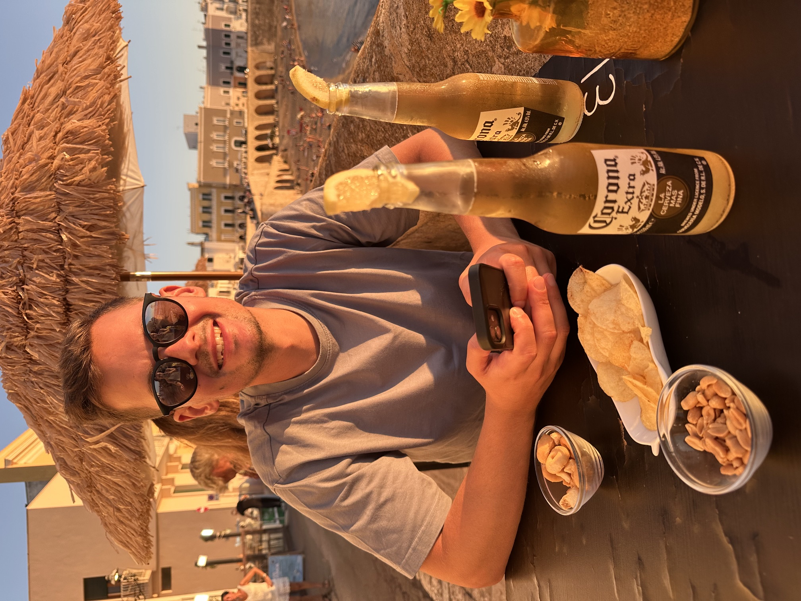

Persönliche Webseite
Diese Seite: HTML, CSS und Vanilla-JavaScript, gehostet auf GitHub Pages.
Quellcode
Hallo, ich bin Jonas, 33 Jahre alt und komme ursprünglich aus der Vulkaneifel – einer Gegend, in der man zwischen Maaren und Vulkankegeln schnell ein Gefühl für Landschaft und Gelände bekommt. Vielleicht kein Zufall, dass ich gelernter Vermessungstechniker bin.
Nach 15 Jahren als Vermessungstechniker bei der Vermessungs- und Katasterverwaltung im 2. Einstiegsamt habe ich mich für einen neuen Schritt entschieden: Heute studiere ich im 5. Semester Geoinformatik und Vermessung (B. Sc.) an der Hochschule Mainz. Dafür bin ich nach Mainz gezogen – und habe hier eine neue Heimat gefunden.
| Jahr | Station | Ort | Stichwort |
|---|---|---|---|
| 2009–2012 | Vermessungs- und Katasteramt Mayen | Mayen | Ausbildung zum Vermessungstechniker |
| 2012–2013 | Vermessungs- und Katasteramt OEH | Mayen | Anwärterzeit 2. EA |
| 2013–2024 | Vermessungs- und Katasteramt WEM | Daun | Führung des Liegenschaftskatasters |
| 2024–heute | Hochschule Mainz | Mainz | B. Sc. Geoinformatik und Vermessung |
News werden geladen …
Eine Auswahl meiner Web-Maps und Webseiten.
Einstieg ins Web-Mapping: eine interaktive OpenStreetMap-Grundkarte von Europa, erstellt mit Python (Folium) und Leaflet.
Fünf meiner Reiseziele von Los Angeles bis Palma de Mallorca als Punktkarte mit Symbol-Markern, Tooltips und Popups.
Rundreise in acht nummerierten Etappen von Edinburgh über Glencoe und die Isle of Skye bis St Andrews, dargestellt als Linie mit Stationen.
Flächenkarte der Welt: Die Länder, die ich bereist habe, sind grün hervorgehoben – mit Ländernamen als Tooltip beim Überfahren.
Virtueller 3D-Globus mit CesiumJS: LoD2-Gebäudemodelle von basemap.de als 3D-Tiles, Dächer rot eingefärbt, auf der basemap.de-Webkarte. Drehen, Neigen und Zoomen mit der Maus.
Diese Seite: HTML, CSS und Vanilla-JavaScript, gehostet auf GitHub Pages.
QuellcodeMein Stundenplan – Woche für Woche.
Termine werden geladen …